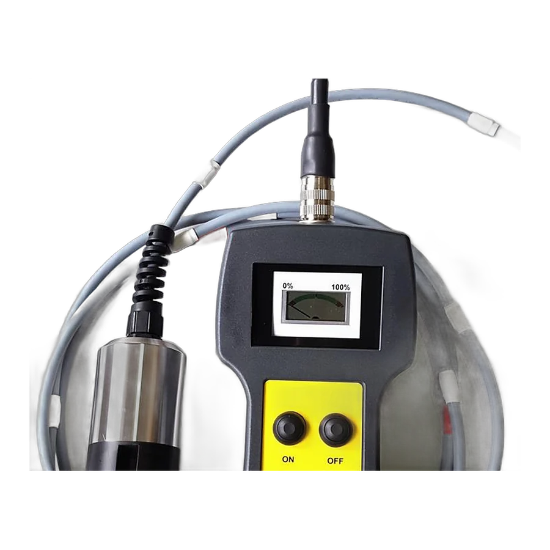

Qualité de l’eau · Boues et MES
DTR01Détecteur portable de niveau de boue
Le niveau de boue d’une fosse ou d’un bassin repéré en quelques secondes. La sonde optique lestée descend au bout de son câble gradué ; l’aiguille de l’afficheur signale la transition entre l’eau claire et la boue.
- Câble
- 4 m ou 8 m, gradué
- Principe
- Absorption de lumière, 660 nm
- Autonomie
- Environ 65 h, pile 9 V
- Poids
- 340 g (boîtier)
Idéal pour
- Fosses septiques
- Assainissement non collectif
- Clarificateurs
- Décanteurs
- Contrôles SPANC
LeasingDisponible à l’achat ou en leasing, par mensualités. Comment ça marche
Points forts
Un outil léger pour chaque intervention sur une fosse ou un bassin.
- Lecture immédiateAfficheur à aiguille : la variation de concentration se voit d’un coup d’œil.
- Sonde lestéeUne bague inox de 5 mm : l’opérateur sent bien le fond.
- Câble graduéTous les 20 cm, pour connaître la position de la sonde.
- Deux longueurs4 m pour les fosses septiques, 8 m pour les bassins.
- Nettoyage simpleAu jet ou dans un seau d’eau, sans démontage.
- En malletteBoîtier polyamide IP65, capteur déconnectable.
Principe de mesure
La sonde porte une diode lumineuse et une photodiode face à face. Dans l’eau claire, la lumière passe ; dans la boue, elle est absorbée.
L’opérateur descend la sonde dans la fosse ou le bassin et lit sur l’afficheur la transition entre l’eau claire et la boue. La graduation du câble donne la hauteur du voile de boue.
- Source LED haute luminosité à 660 nm
- Arrêt automatique après environ 10 minutes
- Câble blindé, gaine PUR
Applications
Pour les contrôles du niveau de boue en assainissement non collectif et collectif.
- Fosses septiquesContrôle du remplissage en assainissement non collectif.
- Clarificateurs et décanteursHauteur du voile de boue en station d’épuration.
- Contrôles de terrainMatériel léger pour les tournées d’intervention.
- BassinsVersion à câble de 8 m.
Caractéristiques
Boîtier, capteur et mallette.
| Matériau | Polyamide, IP65 |
|---|---|
| Afficheur | LCD représentant une aiguille |
| Alimentation | 1 pile 9 V, environ 65 h, arrêt automatique |
| Dimensions | 187 × 106 × 50 mm, 340 g |
| Température | 0 à 50 °C |
| Principe | Absorption de lumière, LED 660 nm |
|---|---|
| Matériaux | Delrin et inox, optiques en polycarbonate |
| Dimensions | Ø 50 × 120 mm, 850 g avec 4 m de câble |
| Câble | 4 m gradué sur 3 m, ou 8 m gradué sur 7 m, tous les 20 cm |
| Mallette | Polypropylène, 382 × 237 × 100 mm |
Téléchargements
Questions fréquentes
Les questions que nous posent le plus souvent les exploitants et les bureaux d’études.
Quelle longueur de câble choisir ?
4 m pour les fosses septiques, 8 m pour les bassins comme les clarificateurs et les décanteurs.
Comment lit-on la hauteur de boue ?
L’aiguille de l’afficheur signale la transition entre l’eau claire et la boue ; la graduation du câble, tous les 20 cm, donne la position de la sonde.
Le capteur se nettoie-t-il facilement ?
Oui, au jet ou dans un seau d’eau, sans démontage.
Existe-t-il une version fixe ?
Oui : le DTR02 surveille en continu le niveau de boue des bassins de décantation, avec deux capteurs et des seuils haut et bas.